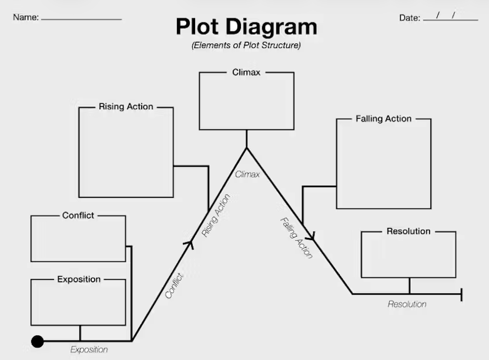

Here are the essential steps that help you understand:
A basic understanding of the key components of a short story:
Reading short stories effectively begins with understanding the setting and characters, as these elements ground the reader in the story’s world. The setting—time, place, and atmosphere—often shapes the characters’ behavior and the story’s mood, so paying attention to descriptive details can reveal hidden tensions or themes. Characters should be examined not only for who they are, but for what they want and how they change. Noticing a character’s motivations, flaws, and relationships helps readers predict conflicts and understand why events unfold the way they do.
Conflict is the engine that drives a short story forward, and identifying it early makes the plot easier to follow. Conflicts can be external, such as a struggle between characters or against society, or internal, such as a character’s moral dilemma or emotional struggle. As the conflict develops, it leads into the rising action, where complications and obstacles intensify the stakes. Readers should track how each event increases tension and pushes the story closer to a decisive turning point.
The climax, falling action, and resolution reveal the story’s deeper meaning, so careful attention to these stages is essential. The climax is the moment of highest tension, where the central conflict reaches a breaking point and the outcome becomes clear. The falling action shows the consequences of this moment, while the resolution (or lack of one) helps convey the author’s message or theme. By analyzing how the story builds toward and resolves its conflict, readers can better understand the author’s purpose and appreciate how every element works together to create a powerful, unified narrative.

🐾 Tip: What really counts is your daily habit of one hour reading!